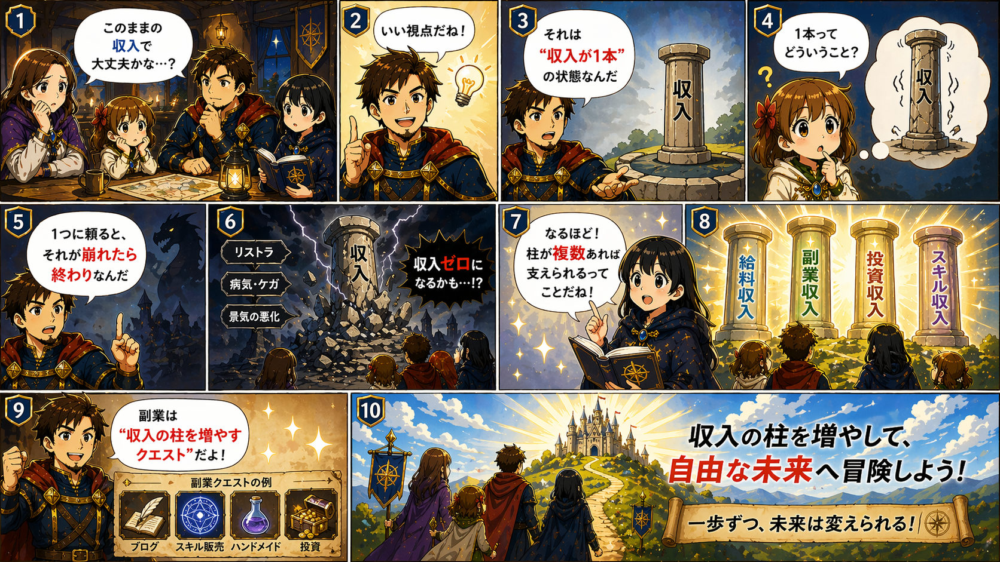

「今の収入でなんとか生活できている」
そう思っていませんか？
- 給料は安定している
- でも大きく増えることはない
- 将来がなんとなく不安
これ、かなり普通です。
でも実は👇
👉 それが一番リスクの高い状態です
🎮 ミリオンクエスト家族の会話
🏰 FAMILY QUEST
収入について考えた夜

🧠 概念の定義
👉 副業とは「収入の柱を増やすこと」
💡 なぜ副業が必要か
人は👇
- 安定していると安心する
- でもその状態に依存してしまう
しかし現実は👇
- 会社に依存
- 景気に依存
- 社会に依存
👉 コントロールできないものに頼っている
⚠️ 問題点
このままだと👇
- 収入が増えない
- 突然の変化に弱い
- 選択肢が増えない
つまり👇
自由がない状態になる
🧠 経営学的な本質
ここが一番大事👇
リスクは「分散」でしか減らせない
投資と同じです👇
| 収入の状態 | リスク |
|---|---|
| 1つに集中（会社のみ） | 危険 |
| 複数に分散（本業＋副業） | 安定 |
🔧 解決方法（これだけ）
小さくていいから「収入源を1つ増やす」
ポイント👇
- 最初は月1万円でもOK
- 継続できるものを選ぶ
- スキルになるものが理想
🔄 応用
副業の本当の価値👇
- 収入が増える
- スキルが増える
- 自信がつく
つまり👇
👉 人生の選択肢が増える
🎯 まとめ
収入は「増やす」より
「分ける」が先
わたし自身、本業（サラリーマン）に加えて非常勤講師と講演活動を持っています。収入の柱が複数あると、心の余裕がまったく違います。最初の副業は小さくていい。「月1万円」から始めてみてください。